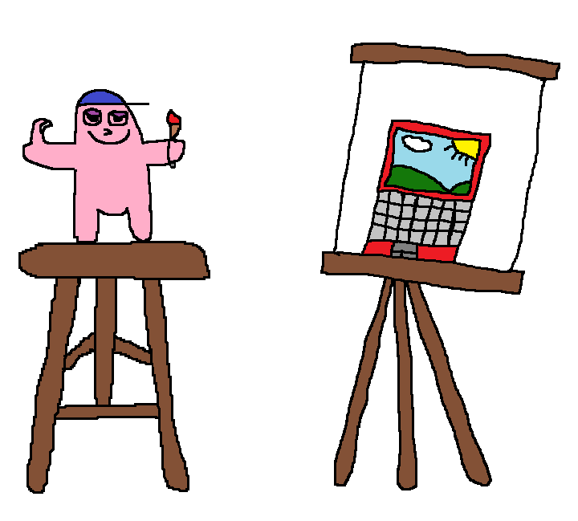
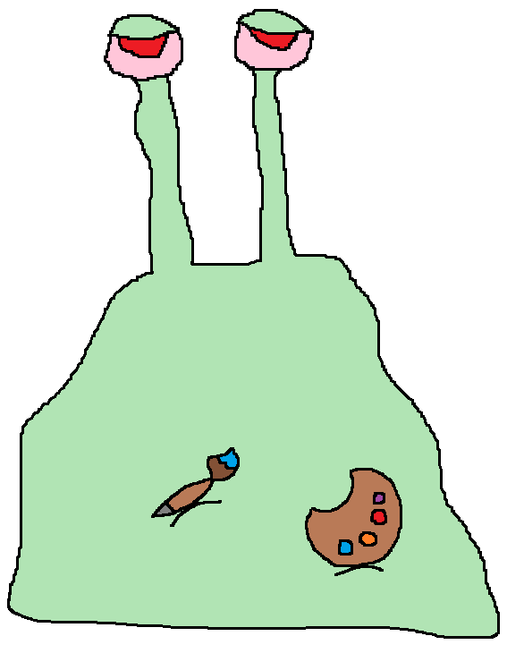

O futuro em design gráfico
"Eu me tornei bilionário após fazer este ambicioso curso"
Atualmente:
Engenheiro da NASA
"Esse curso abriu meus olhos para o mundo e fez eu buscar por muito mais"
Atualmente:
Desempregado
"Se eu confiei toda a minha poupança a esse curso, é porque vale a pena"
Atualmente:
Trabalha com marketing multinível
"Esse curso gera bastante valor para a sociedade, compre meu curso depois"
Atualmente:
Cria cursos de design gráfico
FROM ZERO TO HERO
 É claro que a adoção de políticas descentralizadoras obstaculiza a apreciação da importância do levantamento das variáveis envolvidas. Portanto, A certificação de metodologias que nos auxiliam a lidar com a necessidade de renovação processual deve passar por modificações independentemente dos índices pretendidos. O que nos levou a assumir que o incentivo ao avanço tecnológico, assim como a determinação clara de objetivos representa uma abertura para a melhoria do sistema de formação de quadros que corresponde às necessidades, por isso a nível organizacional, o fenômeno da Internet obstaculiza a apreciação da importância das condições inegavelmente apropriadas.